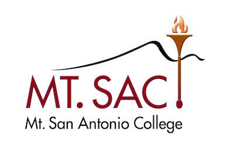
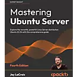

Courses at Mt. San Antonio College
Winter 2026
Winter term begins on 1/5/2025 and ends on 2/15/2025.
Winter term courses are 6 weeks long and are offered ONLINE and ASYNCHRONOUS. Course material will be delivered throught the Canvas LMS.
CISB 11 – Computer Information Systems
Overview of computer information systems including computer hardware, software, networking, programming, databases, Internet, security, systems analysis, ethics, and problem solving using business applications. CISB course information.
📚 New Perspectives on Computer Concepts 2018: Comprehensive
📚 Discovering Computers: Digital Technology, Data, and Devices
This course is offered asynchronously online.
CISP 10 – Introduction to Object Oriented Programming
Object-oriented design, patterns, and use of Unified Modeling Language (UML) in different programming languages that will enable students to build large packages and business applications. The course also covers Agile and Scrum methodologies. Learn more about our CISP courses.
📚 Programming Logic and Design, 10th Edition.
📌 This coures will focus on the Python 3 programming language.
This course is offered asynchronously online.
Spring 2026
The spring term begins on 2/23/2025 and ends on 6/14/25.
Courses are available on campus and online. Course material will be delivered through the Canvas LMS.
CISB 11 – Computer Information Systems
Overview of computer information systems including computer hardware,
software, networking, programming, databases, Internet, security,
systems analysis, ethics, and problem solving using business
applications.
CISB course information.
📚
New Perspectives on Computer Concepts 2018: Comprehensive
📚
Discovering Computers: Digital Technology, Data, and Devices
CISB 11 will be offered both in person (Tue/Thu 10:30am–12:55pm in 79-2280) and asyncronously online.
CISN 71 – Introduction to Cloud Computing
Concepts and principles of cloud computing that shift information
systems from on-premises computing infrastructure to highly scalable
internet architectures. Topics includes cloud computing technologies,
cloud services (storage, servers and software applications), cloud
providers, industry cloud practices, cloud careers, and industry demand
for cloud skills. Students analyze a variety of case studies to
effectively evaluate and assess the business and technical benefits of
cloud computing and cloud applications.
This course is offered asynchronously online.
CISN 71 is part of AWS Academy and helps you earn the AWS Certified
Cloud Practitioner certification.
CISW 17 – HTML, CSS, and JavaScript Programming
Plan, program, implement, publish, and maintain web sites using
Hypertext Markup Language version 5 (HTML5), Cascading Style Sheets
version 3 (CSS3), and JavaScript. Includes working with text, semantic,
and multimedia objects, tables, forms, Application Programming
Interfaces (APIs), Document Object Model (DOM), cross-browser
compatibility, markup validation, client-side interactivity, and
principles of web page design, web site construction, documentation, and
publishing.
In person on Wednesdays from 7pm—10:10pm in 78-2110.
CISW 31/31L – Secure Web Server Programming in PHP
Students will build Ubuntu Server virtual machines with a strong focus on command line interaction. Students will learn php programming and build a CMS. Students will deploy the CMS and secure ubuntu server for production.
Offered asynchronously online.
There is both a lecture and lab component for this course.


Programs
CIS Professional in Web Programming
The CIS Professional Certificate in Web Programming provides students
the programming skills to create effective web pages and web sites. The
certificate offers a balanced set of classes that prepares students to
design, debug and implement both client-side and server-side web
programs. Emphasis is placed on acquiring programming skills in various
web programming, scripting or markup languages such as JavaScript, HTML,
DHTML, XHTML, XML, CSS, ASP.NET, AJAX, SQL and Perl. Students will also
learn to configure and install an Apache web server in a Linux or
Windows system and access a MySQL database using PHP programs.
Opportunities available after the completion of this certificate include
web programming or web and database server administration.
Required Courses
| Course Prefix |
Course Name |
Units |
| CISW 17 |
HTML, CSS, and JavaScript Programming |
3 |
| CISW 24 |
Secure Web Server Programming in Python |
3 |
| CISW 24L |
Secure Web Server Programming in Python Laboratory |
0.5 |
| CISW 31 |
Secure Web Server Programming in PHP |
3 |
| CISW 31L |
Secure Web Server Programming in PHP Labortory |
0.5 |
| Total Units |
10 |
CIS Professional in Cloud Computing for Amazon Web Services
The CIS Professional Certificate in Cloud Computing for Amazon Web
Services program prepares students to design solutions for
Infrastructure as a Service (IaaS) architectures by provisioning
computing instances, establishing virtual private networks, managing
databases and storage within a secure online environment. Students
produce dynamic solutions responsive to information and computing
technology workloads with on-demand pay-as-you-go pricing allowing
flexibility for small business, entrepreneurship, and enterprise
adoption. Industry certifications are embedded to prepare for
occupations in Cloud Architect, Cloud Support Associate, Cloud Engineer
or Cloud Technicians. Some preparation in information technology or
computer programming is recommended.
Required Courses
| Course Prefix |
Course Name |
Units |
| CISN 71 |
Introduction to Cloud Computing |
3 |
| CISN 72A |
Cloud Computing Database Essentials in Amazon Web Services |
3 |
| CISN 73A |
Compute Engines in Amazon Web Services |
3 |
| CISN 74A |
Security in Amazon Web Services |
3 |
| Elective |
CISW 17, CISW 24/L, CISW 31/L, CISP21/L, or CISP 71/L |
3 or 3.5 |
| Total Units |
15 or 15.5 |
Learn more about the
degrees and certificates
you can earn at Mt. SAC.